Sensors
Sensors measure physical quantities that are outputs from electromechanical systems. A sensed signal will go through a few steps before we have access to the data:
- The physical phenomena, the signal source, will happen
- The sensor will detect this by some mechanism and output a noisy signal
- Some signal conditioning/processing will take place to make the signal easier to read
- Analogue to Digital conversion samples and digitises the data
- The digitised data is presented to software as binary information
Performance of Sensors
There are a number of metrics used to measure the performance of a sensor, and which metrics are considered will depend upon the use case.
- Accuracy
- How close is the output to the true value of the input?
- A sensor with high accuracy will give readings close to the quantity being sensed
- Precision
- How consistent are the readings for the same input?
- How repeatable are the readings?
- Precise data is close to each other, but not necessarily to the true value
- High precision with low accuracy may be acceptable if the systematic inaccuracy can be compensated for
- Drift
- Changes in the output of the sensor not related to the input
- Often related to temperature, as this affects electrical properties
- Hysteresis
- The difference between the output when the input is increasing, and the output when the input is decreasing
- Quantities may be sensed differently depending upon their rate of change
- Common phenomenon and is often useful in other applications
- Often provided as an average percentage
- Linearity
- How the output changes with input over its operating range
- Linear behaviour is ideal as it simplifies output processing
- Many sensors have a linearity error of how much the output deviates from linear behaviour
- Resolution
- Changes in measured quantity may be too small to detect
- Sensor will have a max resolution which is the smallest changes it can sense
- Resolution also limited by ADC
- Gain
- How much the output changes with the input
- Too high and small changes will give large output swings and low noise tolerance
- Too low and the system will not respond to small changes
- Often given as how much voltage changes per measured unit
- A temperature sensor will have a gain in mV/°C
- Range
- The max and min values that can be sensed
- Can also define a linear range, the range for which the sensor has linear behaviour
- Can set a fixed operating range, to increase sensitivity or resolution over a smaller range
- Wider range usually gives lower sensitivity/resolution
Signal Conditioning
Generally sensor output is some voltage, which will be given as input to a microcontroller. Voltage signals can be too large, too small, or too noisy, so some conditioning/processing is required
- Filtering to remove noise
- Amplification to increase the range of the signal
- Attenuation to decrease the range of the signal
- Too large a voltage may damage the electronics
Op-amp circuits are usually involved in signal conditioning.

-
- is the open loop gain
- Both open loop gain and input resistance are in an ideal op amp
- No current flows in or out of the inputs
- The two inputs are always at the same voltage
Buffer
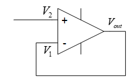
- The output is connected to the inverting input
- Negative feedback
- Provides decoupling between circuits
- No current flows into , but will still equal as the two inputs are always at the same voltage
- Ensures no current flows to provide protection
- No current is drawn from the supply by the op-amp
Comparator
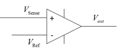
- Amplifies the difference between the two input voltages
- Output saturates at power rail voltages
- Useful for indicating when output reaches a threshold
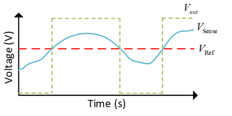
Inverting Op-Amp
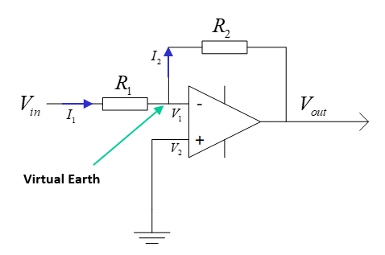
- Inverts and amplifies the input
- Amplifies small sensor output voltages
- (see ES191)
Non-Inverting Op-Amp

- Amplifies and does not invert input
Attenuation
Voltage attenuation can be easily achevied with just a voltage divider

- has range 0 to 20V
- , ,
- has range 0 to 5V
Low Pass Filter
A low pass filter attenuates the high frequency components of a signal:

This is a voltage divider with a capacitor:
- The impedance of a capacitor is dependant upon frequency:
- Higher frequency, lower impedance
- The corner/cutoff frequency is where the output is -3 decibels smaller than the input (about 71%)
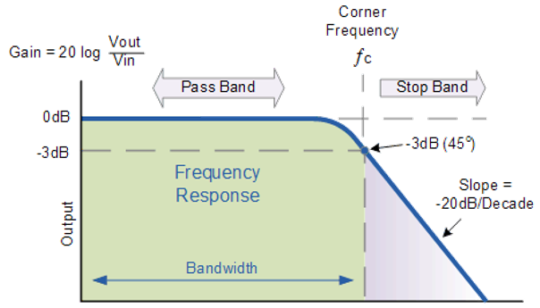
Reading Signals and ADC
- Signals are typically read with microcontrollers
- Input to microcontrollers has a maximum which if exceeded will damage the part
- Signals are read and digitised so they can be understood by digital electronics
- Signal is sampled at discrete time steps, at a sampling frequency
- Each sample is the value of the signal at time
- The sample value is held until the next sample, when the sample value is updated
- This creates a digital signal, an approximation to the input signal
- Sampling frequency has a large affect on how close the digital signal is to the original
- To maintain the highest frequency components of the signal
- is the highest frequency present in the signal, the nyquist frequency
- In practice, sample rate should be much higher than double
- Signal sample levels may only take a finite, discrete number of values
- Quantisation level
- Samples are rounded to nearest quantum
- Higher sampling resolution means more accurate digital signal
A signal measured with a 4-bit ADC:
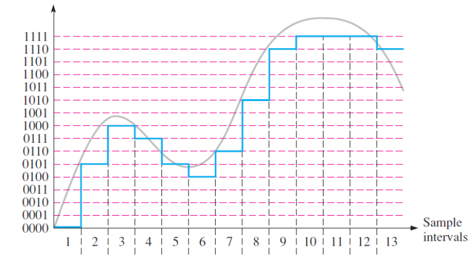
The circuit below shows a 3-bit ADC implemented with a priority encoder and op amps:
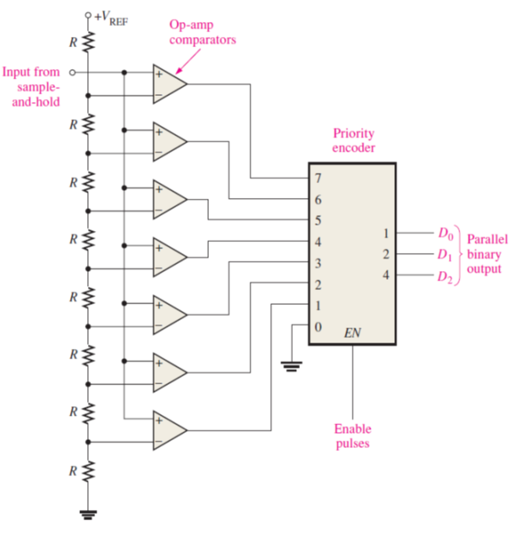
Wheatstone Bridge
A wheatsone bridge is a common circuit used to measure an unknown resistance: 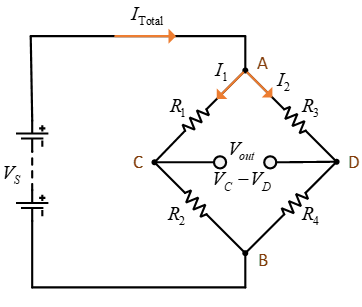
- 4 resistors, one with an unknown value
- Input is a known voltage
- Output is the measured difference between and
- Output of two potential dividers in parallel
- When , the bridge is balanced
This can be exploited to find the value of an unknown resistance. If , and is unknown and the rest are fixed values:
Can also derive an expression for in terms of the rest of the circuit, if is non-zero:
The unknown resistance may be some sensor which changes its resistance based upon a physical quantity, ie an LDR or strain gauge. The circuit below shows a photoresistor in a wheatstone bridge, with buffered outputs connected to a differential amplifier, which will provide an output voltage:
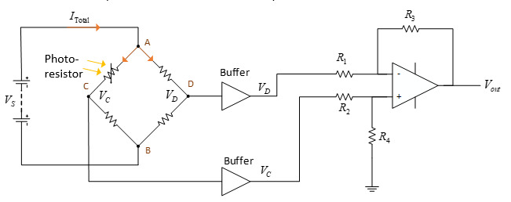
The gain of the differential amplifier is calculated using the following, where and
Force and Torque Sensors
Strain Gauge
- A thin strip of semiconductor which is wafer thin and can be stuck onto things
- The strip deforms as the surface deforms
- When subject to a strain, its resistance changes
- is the gauge factor, is the strain
- Strain is the ratio of change in length to original length, so this will measure how much a material has stretched by
- The diagram below shows how
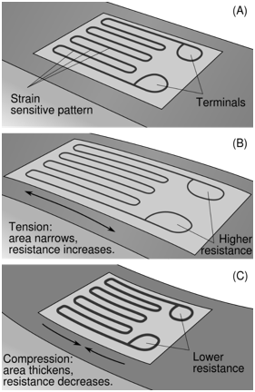
Load Cell
A load cell uses strain gauges to measure force:
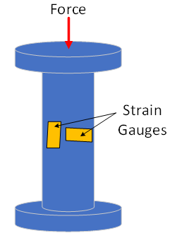
- As the force causes the shape to deform, the strain gauges sense this and the applied force can be calculated
- Important factors to consider are:
- Maximum force load
- How the force can be applied to the cell
- Rated output
Rotary Torque Sensor
Torque sensors work similar to load cells, using strain gauges to detect deformation.

- The sensor is coupled to a rotating shaft
- The rotation of the shaft causes small deformations within the torque sensor, which are detected by strain gauges
Position and Speed Sensors
An encoder is a device that gives a digital output dependent upon linear or angular displacement.
- Incremental encoders detect changes in rotary postition from a starting point
- Absolute encoders give a rotational position
Incremental Encoder
- Incremental encodes contain a disc with multiple holes
- As the disc rotates, the holes will create pulses of light, with each pulse representing a displacement of a certain number of degrees
- Outer two layers slightly offset so direction of rotation can be determined
- Innermost hole counts number of revolutions
- The one shown has 12 holes so a 30° resolution
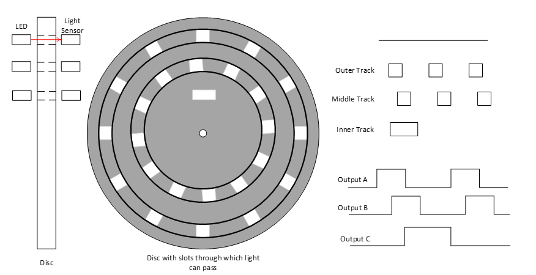
Absolute Encoder
- An absolute encoder works on a similar principal to an incremental encoder
- The output takes the form of binary code whose value is related to the absolute position of the disc
- Multiple layers used to provide unique encoding for each disc segment
- Encoders use gray coding so that if any holes are misaligned then error is minimised
- An 8-bit encoder has 360/256 = 1.4° resolution

Speed sensors
- Encoders can also be used to measure angular velocity by measuring the time taken between pulses within the encoder
- Reflective photoelectric sensors work by reflecting light off a disc with reflective and matte colours, and measuring the rate at which the reflected light changes intensity
- Slotted photoelectric sensors work by detecting if a rotating part is blocking a beam of light or not
Current Sensors
Current Sense Resistors
- Due to Ohm's law, a current passing through a resistor will cause a voltage drop
- That voltage can be measured, and the current accross it calculated
- This will modify the voltage accross the load and cause a power drop
- A small resistor should be used, typically less than 10 ohms
Hall Effect Sensors
- Hall effect sensors use the physical phenomena of flowing electrons being deflected in a magnetic field to measure current
- A magnetic field will cause electrons to be deflected, which will charge either side of a sensor plate depending upon current direction
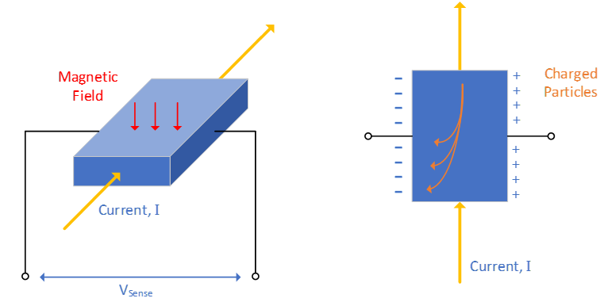
The potential difference between either side of the plate is given by
- is hall coefficient
- is the flux density of the magnetic field
- is current
- is plate thickness
Since , , and are constants, the relationship between current and voltage is linear.